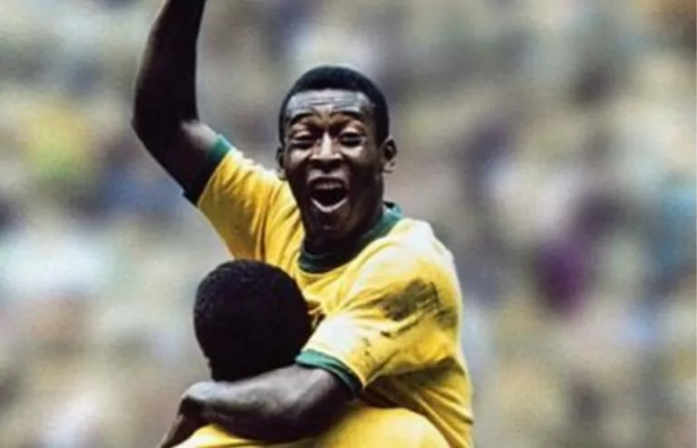
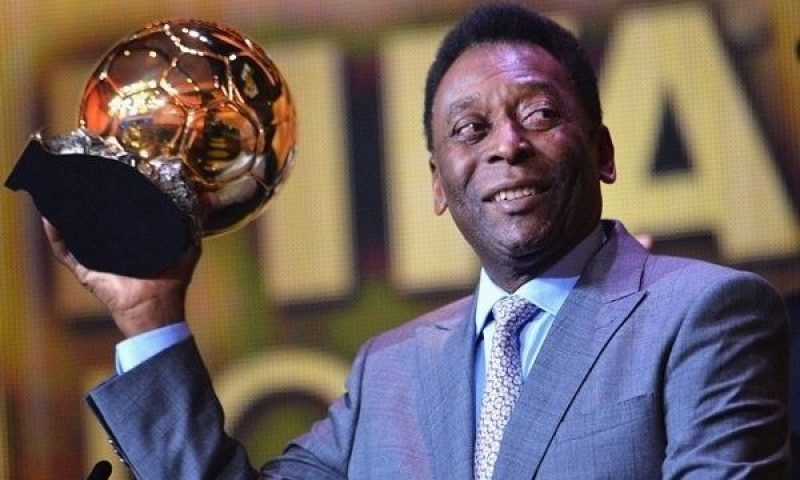

REI PELÉ
Edson Arantes do Nascimento, conhecido como Pelé, nasceu na cidade de Três Corações, em Minas Gerais, no dia 23 de outubro de 1940. Filho de João Ramos do Nascimento (Dondinho), também jogador de futebol e de Celeste Arantes.
Desde pequeno Pelé gostava de futebol e jogava com uma bola de pano. Em 1944 mudou-se com a família para a cidade de Bauru em São Paulo.
Com 10 anos, Pelé começou a carreira de jogador de futebol no infanto-juvenil do Bauru Atlético Clube, em São Paulo, onde conquistou o bicampeonato em 1954 e 1955.
Ainda em 1956, Pelé foi levado para treinar no Santos F.C., pelo também jogador, Waldemar de Brito. Em jogo treino, Pelé fez quatro gols, onde seu time ganhou de 6 a 1.
Sua primeira partida oficial foi no dia 7 de setembro de 1956, em um jogo amistoso entre Santos e Corinthians. O resultado foi de 7 a 1 para o Santos, com dois gols de Pelé.
Na contagem de 1000 gols da carreira, este foi o primeiro oficializado. Pelé levou o Santos a conquistar muitos títulos. Em 1974 fez o seu último jogo com a camisa do Santos.
Pelé fez sua estreia na seleção brasileira no dia 7 de julho de 1957, com 16 anos, na Copa Rocca, no jogo contra a Argentina, no Estádio do Maracanã no Rio de Janeiro, onde marcou seu “primeiro gol pela seleção”, porém o Brasil perdeu por 2 a 1.
Em 1958, na Copa do Mundo na Suécia, Pelé começou a usar a camisa n.º 10, que se tornou sua marca. Nos dois primeiros jogos ele ficou na reserva, só vindo a jogar na terceira partida, contra a União Soviética.
Na partida, Garrincha marcou o primeiro gol e Pelé deu assistência ao segundo gol de Vavá. No jogo seguinte, Pelé marcou o segundo gol na vitória sobre a Inglaterra, conquistando o seu primeiro gol na Copa.
No jogo final contra a França, no dia 29 de junho, Pelé marcou dois gols quando o Brasil foi campeão mundial vencendo a Suécia por 5 a 2. Pelé tornou-se o jogador mais jovem a conquistar uma Copa do Mundo.
Na Copa do Mundo de 1962, no Chile, Pelé já era considerado o melhor jogador do mundo. Na primeira partida contra o México, Pelé foi fundamental na vitória por 2 a 0.
No jogo seguinte, contra a Tchecoslováquia, Pelé sofreu uma distensão muscular e ficou fora da equipe. Quem brilhou no seu lugar foi o jogador Garrincha, quando o Brasil conquistou a segunda Copa do Mundo.

Na Copa do Mundo de 1966 na Inglaterra, embora o Brasil estivesse formado com um time de grandes jogadores como Pelé, Garrincha, Gilmar, Djalma Santos, Jairzinho, Gérson e Tostão, disputou apenas três partidas, sendo eliminado na primeira rodada.
Na Copa do Mundo de 1970 no México, sob o comando do técnico Zagallo, o Brasil jogou seis partidas e conquistou seis vitórias. O Rei Pelé marcou quatro gols e protagonizou alguns dos lances mais bonitos da história do futebol.
Na final, Brasil e Itália entraram em campo na disputa pelo tricampeonato mundial e consequentemente a posse definitiva da Taça Jules Rimet. Em uma cabeçada, Pelé abriu o placar.
Em seguida, a Itália empatou. No segundo tempo, Gérson fez 2 a 1, Jairzinho fez 3 a 1 e Carlos Alberto, em uma bola rolada por Pelé, fez 4 a 1, conquistando o tricampeonato e definitivamente a Taça Jules Rimet.
Em 1971, Pelé decidiu se aposentar da Seleção Brasileira e sua despedida se fez em dois jogos. A primeira partida foi realizada em 11 de julho, contra a Áustria, no Estádio do Morumbi, São Paulo, que terminou empatada em 1 a 1.
A segunda partida foi no Estádio do Maracanã em 18 de julho, contra a Iugoslávia, com o placar de 2 a 2. Pelé que atuou apenas no primeiro tempo, deu a volta olímpica no intervalo da partida.
Pelé jogou também no New York Cosmos no período de 1975 a 1977 ano em que conquistou o Campeonato da Liga Americana – NASL. A última partida pelo time americano foi no Giants Stadium em 1 de outubro de 1977. Foi eleito presidente honorário do New York Cosmos.
Pelé aposentou-se do futebol no ano de 1977.

Maior ganhador do BallonDor
Maior artilheiro da história do futebol
Tricampeão da Copa do Mundo
Bicampeão da Libertadores
Bicampeão do Mundial de Clubes
Hexacampeão do Campeonato Brasileiro
Simplismente Pelé
.png)